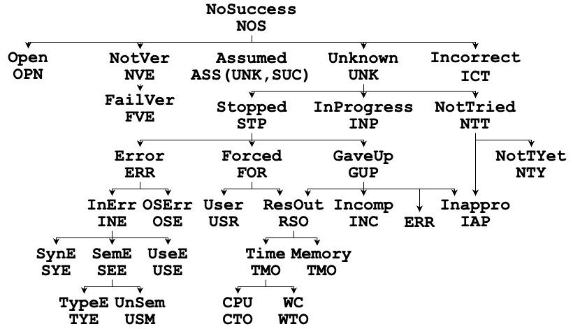
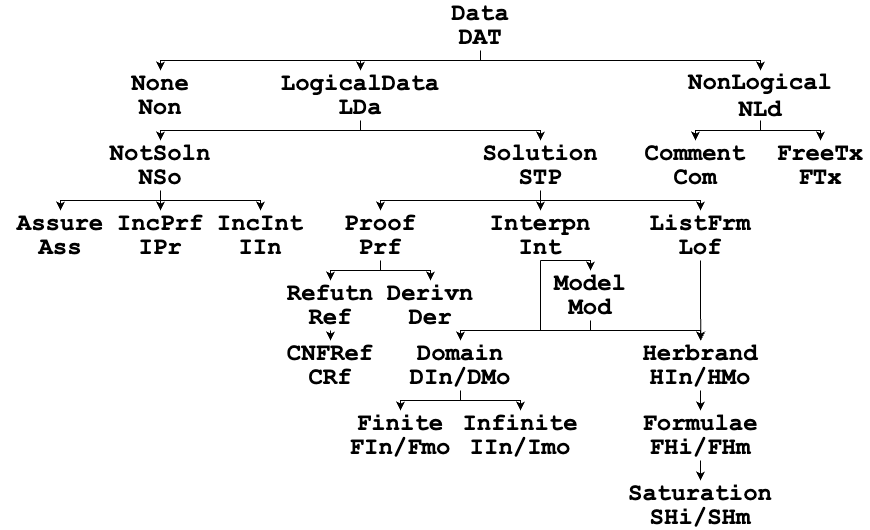

SZS Ontology
The SZS ontologies (named after the authors of the original paper describing the success ontology
[SZS03,
SZS04,
Sut08]
provide status values to describe logical data.
The SZS success ontology provides status values to describe what is known or has been
successfully established about the relationship between the axioms and conjectures in logical data.
The SZS no-success ontology provides status values to describe why a Success Ontology
value has not been established.
The SZS dataform ontology provides status values to describe the nature of logical data.
All status values are expressed as OneWord to make system output parsing simple, and also
have a three letter mnemonic.
In the figures below many of the "OneWord" status values are abbreviated - see the list
below for the official full "OneWord"s.
The lines in the ontologies can be followed up the hierarchy as "isa" links, e.g., an
EquivalentTheorem (ETH) isa Equivalent (EQV) isa
Satisfiable (SAT) and isa SatisfiableAxiomsTheorem (STH).
Commonly Used Ontology Values
The ontologies are very fine grained ontology, which have more status values and dataforms than are
commonly used by ATP systems.
Suitable subsets for practical purposes are as follows:
- For Success
- For problems with conjectures - report Theorem or ContradictoryAxioms
or CounterSatisfiable
- For problems without conjectures - report Satisfiable or Unsatisfiable
- For NoSuccess
- System stopped due to CPU limit - report Timeout
- System gave up due to incompleteness - report GaveUp
- System stopped due to an error - report Error
- For Dataforms
- A generic proof - report Proof
- A CNF refutation - report CNFRefutation
- A generic model - report Model
- A finite model - report FiniteModel
- An infinite model - report InfiniteModel
- A saturation - report Saturation
Success ontology values are also used in TPTP format proofs to record the relationship between
the parents and inferred formula of each inference step.
Commonly used values are:
- The inferred formula is a theorem of the parents (logical consequences, e.g., resolvants,
etc.) - report Theorem
- The inferred and parent formulae are equisatisfiable (e.g., Skolemization) - report
EquiSatisfiable
- The negation of the inferred formula is a theorem of the parents (e.g., negating the
conjecture in a proof by refutation) - report CounterTheorem
Standard Presentation of Ontology Values
The solution status should be reported exactly once, in a line starting
"% SZS status" (the leading '%' makes the line into a TPTP language
comment).
For examples:
% SZS status Unsatisfiable for SYN075+1
% SZS status GaveUp for SYN075+1
A success or no-success ontology value should be presented as early as possible, at least before
any data output to justify the value.
The justifying data should be reported exactly once, delimited by lines starting
"% SZS output start" and "% SZS output end".
For example:
All "% SZS" lines can optionally have software specific information appended,
separated by a :.
For examples:
% SZS status GaveUp for SYN075+1 : Could not complete CNF conversion
% SZS output end CNFRefutation for SYN075-1 : Completed in CNF conversion
The Success Ontology
The ontology assumes that the input is a 2-tuple of the form <Ax,C>,
where Ax is a set (conjunction) of axioms and C is a set (conjunction) of
conjectures.
This is a common standard usage of ATP systems (often there is only a single conjecture).
If the input does not have any conjectures, e.g., a set of axioms, then the set (conjunction)
of formulae are used to form C and the 2-tuple is <TRUE,C>.
The ontology values are based on the possible relationships between the sets of models of
Ax and C.
- Success (SUC):
The logical data has been processed successfully.
- UnsatisfiabilityPreserving (UNP):
If there does not exist a model of Ax then there does not exist a model of
C, i.e., if Ax is unsatisfiable then C is unsatisfiable.
- SatisfiabilityPreserving (SPT):
If there exists a model of Ax then there exists a model of C,
i.e., if Ax is satisfiable then C is satisfiable.
- EquiSatisfiable (ESA):
There exists a model of Ax iff there exists a model of C,
i.e., Ax is (un)satisfiable iff C is (un)satisfiable.
- ModelExtending (MEX):
Some interpretations are models of Ax, and some interpretations are models of
C, and all models of C are conservative extensions of models of Ax
(which also means that all models of C are models of Ax).
- Satisfiable (SAT):
Some interpretations are models of Ax, and some models of Ax are models of
C.
- FinitelySatisfiable (FSA):
Some finite interpretations are finite models of Ax, and some finite models of
Ax are finite models of C.
- FiniteTheorem (FTH):
All finite models of Ax are finite models of C.
- Theorem (THM):
All models of Ax are models of C.
- SatisfiableAxiomsTheorem (STH):
Some interpretations are models of Ax, and all models of Ax are models of
C.
- Equivalent (EQV):
All models of Ax are models of C, and all models of C are models of
Ax.
- TautologousConclusion (TAC):
Some interpretations are models of Ax, and all interpretations are models of
C.
- WeakerConclusion (WEC):
Some interpretations are models of Ax, all models of Ax are models of
C, and some models of C are not models of Ax.
- EquivalentTheorem (ETH):
Some, but not all, interpretations are models of Ax, all models of Ax are
models of C, and all models of C are models of Ax.
- Tautology (TAU):
All interpretations are models of Ax, and all interpretations are models of
C.
- WeakerTautologousConclusion (WTC):
Some, but not all, interpretations are models of Ax, and all interpretations are
models of C.
- WeakerTheorem (WTH):
Some interpretations are models of Ax, all models of Ax are models of
C, some models of C are not
models of Ax, and some interpretations are not models of C.
- FiniteTautology (FTT):
All finite interpretations are models of Ax, and all finite interpretations are
models of C.
- CounterUnsatisfiabilityPreserving (CUP):
If there does not exist a model of Ax then there does not exist a model of
~C, i.e., if Ax is unsatisfiable then ~C is unsatisfiable.
- CounterSatisfiabilityPreserving (CPT):
If there exists a model of Ax then there exists a model of ~C,
i.e., if Ax is satisfiable then ~C is satisfiable.
- EquiCounterSatisfiable (ECS):
There exists a model of Ax iff there exists a model of ~C,
i.e., Ax is (un)satisfiable iff ~C is (un)satisfiable.
- CounterModelExtending (CMX):
Some interpretations are models of Ax, and some interpretations are models of
~C, and all models of ~C are conservative extensions of models of
Ax (which also means that all models of ~C are models of Ax).
- CounterSatisfiable (CSA):
Some interpretations are models of Ax, and some models of Ax are models of
~C.
- FinitelyCounterSatisfiable (FCS):
Some finite interpretations are finite models of Ax, and some finite models of
Ax are finite models of ~C.
- FiniteCounterTheorem (FCT):
All finite models of Ax are finite models of ~C.
- CounterTheorem (CTH):
All models of Ax are models of ~C.
- SatisfiableAxiomsCounterTheorem (SCT):
Some interpretations are models of Ax, and all models of Ax are models of
~C.
- CounterEquivalent (CEQ):
Some interpretations are models of Ax, all models of Ax are models of
~C, and all models of ~C are models of Ax,
i.e., all interpretations are models of Ax xor of C.
- UnsatisfiableConclusion (UNC):
Some interpretations are models of Ax, and all interpretations are models of
~C, i.e., no interpretations are models of C.
- WeakerCounterConclusion (WCC):
Some interpretations are models of Ax, and all models of Ax are models of
~C, and some models of ~C are not models of Ax.
- EquivalentCounterTheorem (ECT):
Some, but not all, interpretations are models of Ax, all models of Ax are
models of ~C, and all models of ~C are models of Ax.
- Unsatisfiable (UNS):
All interpretations are models of Ax, and all interpretations are models of
~C, i.e., no interpretations are models of C.
- WeakerUnsatisfiableConclusion (WUC):
Some, but not all, interpretations are models of Ax, and all interpretations are
models of ~C.
- WeakerCounterTheorem (WCT):
Some interpretations are models of Ax, all models of Ax are models of
~C, some models of ~C are not models of Ax, and some
interpretations are not models of ~C.
- FinitelyUnsatisfiable (FUN):
Some finite interpretations are finite models of Ax, and all finite models of
Ax are finite models of ~C, i.e., no finite models of Ax are
finite models of C.
- ContradictoryAxioms (CAX):
No interpretations are models of Ax.
- SatisfiableConclusionContradictoryAxioms (SCA):
No interpretations are models of Ax, and some interpretations are models of
C.
- SatisfiableCounterConclusionContradictoryAxioms (SCC):
No interpretations are models of Ax, and some interpretations are models of
~C.
- TautologousConclusionContradictoryAxioms (TCA):
No interpretations are models of Ax, and all interpretations are models of
C.
- WeakerConclusionContradictoryAxioms (WCA):
No interpretations are models of Ax, and some, but not all, interpretations are
models of C.
- UnsatisfiableConclusionContradictoryAxioms (UCA):
No interpretations are models of Ax, and all interpretations are models of
~C, i.e., no interpretations are models of C.
- NoConsequence (NOC):
Some interpretations are models of Ax, some models of Ax are models of
C, and some models of Ax are models of ~C.
- Verified (VER):
The solution output has been verified.
The NoSuccesss Ontology
In order to understand and make productive use of a lack of success, it is necessary to precisely
specify the reason for and nature of the lack of success.
The SZS no-success ontology provides status values for describing the reasons.
Note that no-success is not the same as failure: failure means that the software has completed
its attempt to process the logical data and could not establish a success ontology value.
In contrast, no-success might be because the software is still running, or that it has not yet
even started processing the logical data.

- NoSuccess (NOS):
The logical data has not been processed successfully (yet).
- Unknown (UNK):
A success value for the ATP problem has never been established.
- Stopped (STP):
Software attempted to process the data, and stopped without a success status.
- InProgress (INP):
Software is still running.
- NotTried (NTT):
Software has not tried to process the data.
- NotTriedYet (NTY):
Software has not tried to process the data yet, but might in the future.
- Error (ERR):
Software stopped due to an error.
- Forced (FOR):
Software was forced to stop by an external force.
- GaveUp (GUP):
Software gave up of its own accord.
- OSError (OSE):
Software stopped due to an operating system error.
- InputError (INE):
Software stopped due to an input error.
- SyntaxError (SYE):
Software stopped due to an input syntax error.
- SemanticError (SEE):
Software stopped due to an input semantic error.
- TypeError (TYE):
Software stopped due to an input type error (for typed logical data).
- Unsemantic (USM):
The semantics makes no sense (for semantics specifications).
- UsageError (USE):
Software stopped due to an ATP system usage error.
- User (USR):
Software was forced to stop by the user.
- ResourceOut (RSO):
Software stopped because some resource ran out.
- Timeout (TMO):
Software stopped because a time limit ran out.
- CPUTimeout (CTO):
Software stopped because the CPU time limit ran out.
- WCTimeout (WTO):
Software stopped because the wall clock time limit ran out.
- MemoryOut (MMO):
Software stopped because the memory limit ran out.
- Incomplete (INC):
Software gave up because it's incomplete.
- Inappropriate (IAP):
Software gave up because it cannot process this type of data.
- Incorrect (ICT):
Software gave an incorrect answer.
- Assumed (ASS(U,S)):
The success ontology value S has been assumed because the actual value is unknown
for the no-success ontology reason U. U is taken from the subontology
starting at Unknown in the no-success ontology.
- Open (OPN):
A success value for the abstract problem has never been established.
- NotVerified (NVE):
The solution output has not been verified.
- FailedVerified (FVE):
The solution output failed verification.
The Data Ontology
The data ontology provides suitable values for describing the form of logical data.
The ontology values are commonly used to describe data provided to justify a success ontology
value, e.g., if an ATP system reports the success ontology value Theorem it might output
a Proof to justify that.

- Data (Dat):
Data output.
- LogicalData (LDa):
Logical data.
- Solution (Sln):
A solution.
- Proof (Prf):
A proof.
- Interpretation (Int):
An interpretation.
- ListOfFormulae (Lof):
A list of formulae.
- Derivation (Der):
A derivation (inference steps, possibly ending in the theorem).
- Refutation (Ref):
A refutation (starting with Ax U ~C and ending in FALSE).
- CNFRefutation (CRf):
A refutation in clause normal form, including, for FOF Ax or C, the
translation from FOF to CNF (without the FOF to CNF translation it's an
IncompleteProof).
- Model (Mod):
A model.
- DomainInterpretation (DIn):
An interpretation whose domain is not the Herbrand universe.
- DomainModel (DMo):
A model whose domain is not the Herbrand universe.
- FiniteInterpretation (FIn):
A DomainInterpretation with a finite domain.
- FiniteModel (FMo):
A DomainModel with a finite domain.
- InfiniteInterpretation (IIn):
A DomainInterpretation with an infinite domain.
- InfiniteModel (IMo):
A DomainInterpretation with an infinite domain.
- HerbrandInterpretation (HIn):
A Herbrand interpretation.
- HerbrandModel (HMo):
A Herbrand model.
- FormulaHerbrandInterpretation (FHi):
A Herbrand interpretation defined by a set of formulae.
- FormulaHerbrandModel (FHm):
A Herbrand model defined by a set of formulae.
- Saturation (Sat):
A Herbrand model expressed as a saturated set of formulae.
- NotASolution (NSo):
Something that is not a well formed solution.
- Assurance (Ass):
Only an assurance of the success ontology value.
- IncompleteProof (IPr):
A proof with some part missing.
- IncompleteInterpretation (IIn):
An interpretation with some part missing.
- NonLogicalData (NLd):
Non-logical output.
- Comment (Com):
TPTP format comments (starting with %).
- FreeText (FTx):
Anything you want.
- None (Non):
Nothing.